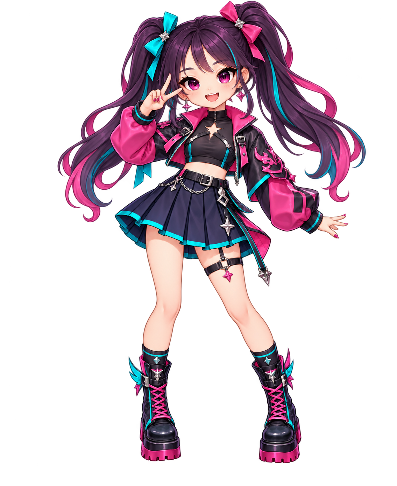

圖層對齊檢查
選擇你製作的透明 PNG，疊在原角色參考圖上。每張素材都應是 1135 × 1386 像素，並保持相同坐標；此頁只在你的裝置上預覽，不會上傳檔案。
尚未選擇檔案。

如果看到黑底、人物其他部位或錯位，這張圖還不能放進換裝遊戲。請參考 檔名與圖層規格。
選擇你製作的透明 PNG，疊在原角色參考圖上。每張素材都應是 1135 × 1386 像素，並保持相同坐標；此頁只在你的裝置上預覽，不會上傳檔案。
尚未選擇檔案。

如果看到黑底、人物其他部位或錯位，這張圖還不能放進換裝遊戲。請參考 檔名與圖層規格。